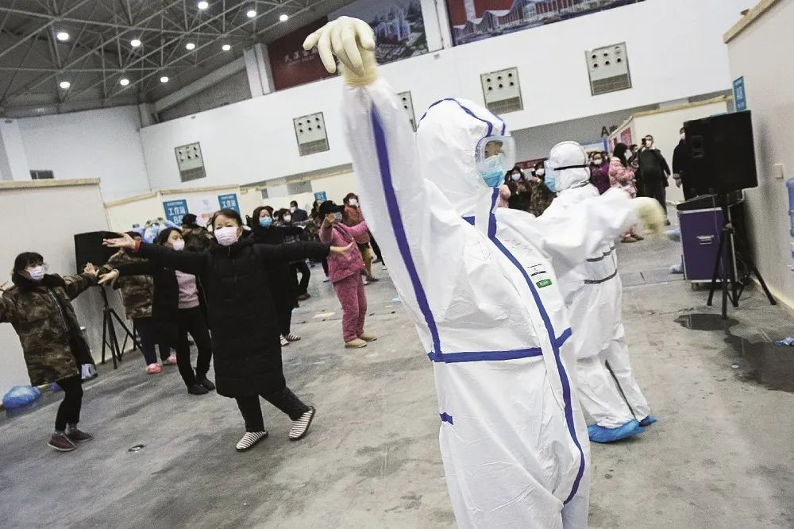

上海防疫再升级：境外输入20例，重点关注16国
原文链接 备份链接 居家隔离标准升级，集中隔离住宿费自理，原则上有200元、400元两档 文 |《财经》记者 陈亮 王静仪 李皙寅 编辑 | 施智梁 作为中国最重要的国际大都市之一，上海正面临第二波防疫考验——严防境外输入。 3月17日下 …

对于隔离外来人员的收费问题，简单的判断标准应该是：非自愿选择者不收费、有功于大局者不收费、可能漏网者不收费、质次价高时不收费

文 | 兰荣杰
对于确诊新冠肺炎的病人，治疗费用由国家承担，这一政策基本没有争议。于私是减轻病人负担，于公则是避免“看不起病”的感染者游离在外传染他人。
近来颇有争议的是，如果因疫情防控需要被强制隔离，住宿及生活费用该由谁承担？天下毕竟没有白吃的午餐，接纳隔离人员的宾馆一定会收费，一日三餐也不可能完全依赖捐赠。在政府、个人和第三方之间，如何分担隔离成本才是最佳选项？
解决这一争议，需要考虑三个层次的问题：一是合法性，即政府收费有无法律依据？二是合理性，即在依据不明的前提下，政府收费是否合理？三是可操作性，即如果需要收费，具体标准该如何确定？
政府向被隔离人员收费合法吗？
《传染病防治法》第四十一条第二款规定：“……政府应当对被隔离人员提供生活保障”。单看这一款，政府似有义务兜底隔离费用；但如果加上第一款，就知道这一条仅针对“已经发生甲类传染病病例的场所或者该场所内的特定区域的人员”，并不包括外来人员。换句话说，若因本地发生疫情被就地隔离，食宿费用应由政府承担；但若因来自外地疫区需要隔离，《传染病防治法》并未对费用问题予以明确。
市场经济的原则是“谁受益谁付费”。即使隔离本地人员，消耗隔离场所食宿资源的也是被隔离人，为何要由政府买单呢？
原因之一，“谁受益谁付费”的前提是契约自由，即买家对于买不买、买什么和买多少有自由选择权，卖家不能强迫交易。对本地人员的隔离恰恰具有强制性，是否隔离、何处隔离和食宿标准这些合同要素，都不由被隔离者选择。如果隔离要收费，既是“霸王合同”，又是“强迫交易”，显然不符合市场原则。
原因之二，防疫隔离除了吃住与付费的对价关系，本质上也是政府暂时“征用”高风险人员的人身自由。“征用”是一种强制购买，为了公共安全，被隔离人员有义务让渡短时间的自由，但也有权利获得合理补偿。鉴于补偿费用是“羊毛出在羊身上”，兼之对自由的“征用”只需要相对人不作为，而不必像医务人员那样积极冲锋陷阵，所以补偿顶多是象征性的，但至少不应让被隔离人员自掏腰包——正如不可能让医生自己买药上前线。
原因之三，如果要求被隔离者付费，可能引发何种社会效果呢？首先是一部分应当隔离的人员可能会想方设法逃避隔离，结果自然是危及公共安全。一旦出现“漏网之鱼”导致疫情扩散，即便仅仅算经济账，也一定是因小失大。其次是不排除部分地方官员与隔离场所勾结，随意扩大隔离范围、提高收费标准，把防疫做成生意，结果难免是助长腐败。正是因此，综合权衡免费隔离的直接成本和收费隔离的潜在损失，对于没有选择权的本地人员，地方政府应当实施免费隔离。
问题在于，相比身不由己的本地人员，部分外来人员似乎有充分的自由去选择是否隔离、何处隔离。比如近日因欧美疫情爆发，大量旅客回流中国，给京沪等门户口岸造成极大的隔离压力。严格说来，这些旅客明知入境就要隔离，似乎可以选择是否回国，也可以选择从何处入关。既然《传染病防治法》并未对这类人员的隔离费用作出规定，各地政府应当如何取舍呢？
规定不明时，对流入人员收取隔离费用合理吗？
表面看来，外来人员自愿流入，自行承担隔离费用，一则你情我愿，二则等价交换，应属天经地义之事。正是因此，一些高速路口就设有收费隔离公示牌，一是希望外来人员知难而退，二来也算明码实价诚信收费。更极端地说，低风险地区接纳高风险地区流入人员，没在隔离费用之外另行收费，似乎已是仁至义尽。然而，公共政策并不仅仅是消费契约，在合同自由和等价交换原则之外，还必须考虑更多复杂因素。
首先，流入地政府必须甄别外来人员是否真有选择的自由。比如在疫情爆发前去疫区出差的本地人员，或者被旅居国遣返的出国人员，多数人并没有选择是否返乡的自由。要求他们付费隔离，要么使其流落街头，要么就是强买强卖，无论如何都触及文明社会的底线。与此类似，当特定区域因为疫情发生严重人道灾难，面临紧迫危险的居民自行流出，也很难说得上是自由选择。
其次，流入地政府必须掂量收费隔离的间接成本。一是不能因当地的些许得失影响抗疫大局，比如从疫区返回的抗疫人员，不管是火神山等工程建设者还是物资运输司机，严格说来确属自愿往来，当地进行收费隔离顶多是“不仗义”，但却可能影响到抗疫大局，应从全国层面予以禁止。二是要区分当前成本和长远收益，比如对疫区前来的务工人员免费隔离，既可争取到本地复工复产的关键劳动力，也可提升本地形象，长远看可能利大于弊。
最后，只有在隔离措施全覆盖的前提下，才可以讨论对自愿流入人员收费隔离。如果隔离措施有漏洞，一些顾虑隔离费用的流入人员，难免会私下潜入而成为“漏网之鱼”。如此一来，不仅存在疫情扩散的风险，还造成“好人吃亏、坏人得利”的错误导向。
如需收费，标准如何确定？
如上所述，对于法律上没有明确的外来人员的隔离费用，在满足严格条件的前提下，地方政府要求一些被隔离人员自行负担，似乎也算合情合理。鉴于隔离措施本质上是一种行政强制行为，基于普遍的行政法治原则尤其是比例原则，隔离收费应当满足两个标准：
一是隔离地点必须满足必要的质量标准，包括安全保障、饮食营养、活动空间、资讯传输和医疗支持等。简而言之，隔离不是坐牢，隔离措施应当仅以控制潜在的疫情扩散为上限，不得不当降低被隔离人员的正常生活水平。
二是收费仅以覆盖成本为限，不宜“发疫情财”。毕竟，考虑到“拒疫情于辖区之外”的动机和逐利天性，一些地方政府难免有高价收费的冲动。但公权不应成为赚钱的工具，更不能沦为“敲竹棒”的打手，否则将是对其合法性的极大冲击。
简而言之，疫情期间的适度人员流动和强制隔离，于公于私都属必要。对于隔离外来人员的收费问题，简单的判断标准应该是：非自愿选择者不收费、有功于大局者不收费、可能漏网者不收费、质次价高时不收费。
唯有如此，才能在护卫抗疫大局的前提下，利用市场规则实现相对公平的社会效果。建议在“一盘棋”的思路下，以上述准则为参考，综合协调各地隔离收费政策，避免地方各自为政、以邻为壑甚至“把抗疫当生意”的乱象。
（作者为西南财经大学法学院副教授，编辑：朱弢）

▲点击图片查看更多疫情报道
责编 | 蒋丽 lijiang@caijing.com.cn
本文为《财经》杂志原创文章，未经授权不得转载或建立镜像。如需转载，请在文末留言申请并获取授权。
原文链接 备份链接 居家隔离标准升级，集中隔离住宿费自理，原则上有200元、400元两档 文 |《财经》记者 陈亮 王静仪 李皙寅 编辑 | 施智梁 作为中国最重要的国际大都市之一，上海正面临第二波防疫考验——严防境外输入。 3月17日下 …
原文链接 备份链接 以下文章来源于财经E法 ，作者姚佳莹 [财经E法 财经E法是脱胎于《财经》杂志的原创内容品牌，我们关注互联网行业中的法治、治理和伦理话题。](#) 依托全国一体化政务服务平台的数据共享支撑，电子健康凭证的推广和应用，考 …
原文链接 备份链接 欧洲疫情不断扩散，英国确诊病例迅速增加，由于部分航班取消，在英留学生想马上回国并不容易 文丨《财经》记者 陈亮 王静仪 编辑丨施智梁 英国疫情蔓延近日明显加速。截至3月15日，英国新冠肺炎确诊病例数已达1372例，与前 …
原文链接 备份链接 意大利迎来最“伤心的”一天，目前全国病死率高达4.96%，为全球最高。韩国病死率约为0.70%，疫情已经稳定 文 | 《财经》数据研究员 徐进 图 | 《财经》视觉中心 编辑 | 郝洲 一、国内为进一步复工做准备 今 …
原文链接 备份链接 2月29日，特朗普在保守派政治行动会议上。来源：特朗普推特 记者：刘芳 “ “最害怕的还是（在疫情过后）我人没怎么样但是课却没过。” ” 不断扩散的新冠肺炎疫情给美国东西海岸人口稠密地区持续带来压力，就连总统特朗普也因 …